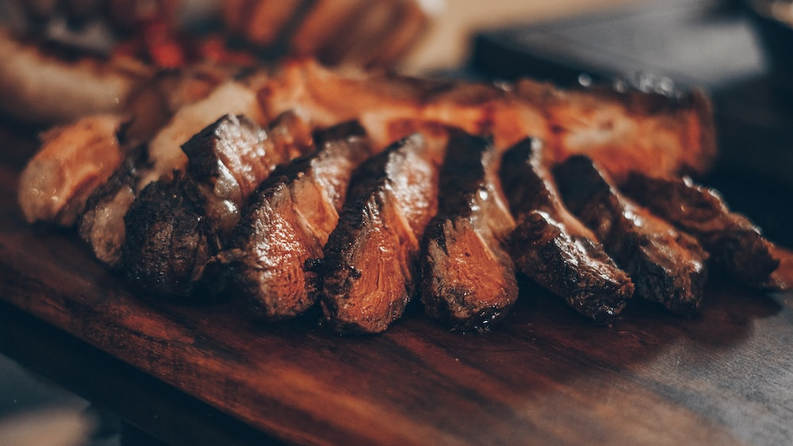

Graze Steakhouse DISH-BECKY-STAR Nairobi's signature restaurant, Graze, is designed to indulge your inner gourmand. Graze is a modern take on the New York-style steakhouse, offering aged beef, succulent seafood and indulgent desserts paired to perfection with eclectic wines and whiskies from some of the finest producers in the world.

The Champagne Bar Located on the seventh floor, The Champagne Bar is a place to relax, indulge and watch the world go by. Our carefully selected beverage list is comprised of champagnes, champagne cocktails and an extensive array of the finest single malt whiskies.